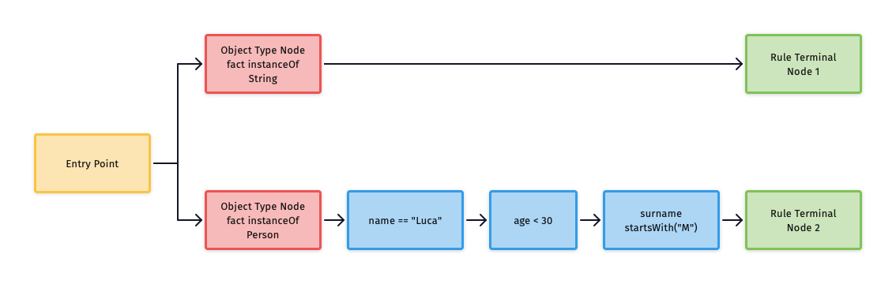
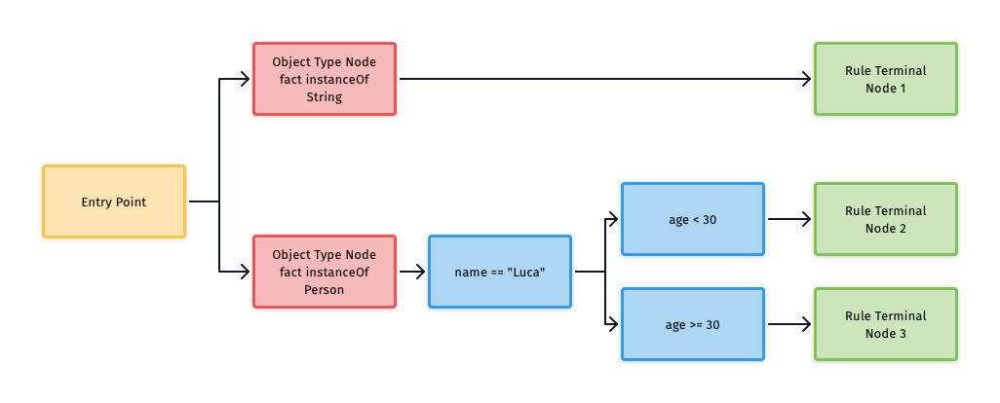
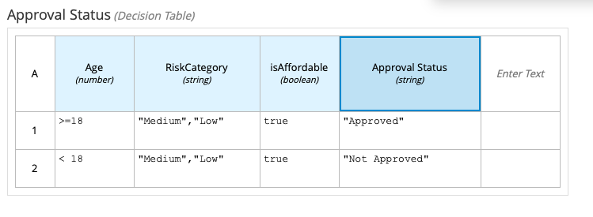
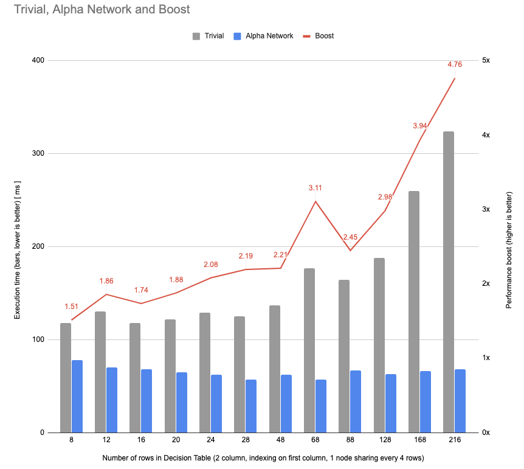

Demystifying the Alpha Network Compiler (ANC)
Quick introduction to Rete nodes
Drools is a rule engine based on PHREAK, an evolution of the original 1974 Rete Algorithm by Charles L. Forgy.
In this article we’re going to take a deep insight to some of the internals of the system and to a specific feature called "Alpha Network Compiler", which has been present for a quite while in the code base but only recently has started to being used actively.
Rules evaluation in Drools is based on a data structure called Rete (meaning "network" in Latin) which is a discrimination tree comprised of different possible kind of nodes. Here’s some examples of such nodes:
- Object Type Nodes
- Alpha Nodes
- Rule Terminal Nodes
- Beta Nodes
- Other kinds
The Alpha Network Compiler is an optimization that is effective when the Rete is assimilable to a pure "Alpha Network" only, which is a shortcut to say it’s a Rete consisting only of Object Type Nodes, Alpha Nodes and Rule Terminal Nodes.
In this article, for the sake of simplicity there won’t be any references to other kinds of nodes.
When dealing with Drools rules evaluation it’s useful to see the relationship between the nodes in a graphical way, so here’s an example of a very simple Rete.

You can see the various kinds of nodes are coloured in different ways: Object Type Nodes (also known as OTN) are pink/salmon, Alpha Nodes are blue and Rule Terminal Nodes are green.
We have a yellow node called "entry-point", which is where the evaluation of the rule starts.
Every object (sometimes called "fact") inserted inside Drools’ working memory is evaluated against each node in order, if the evaluation succeeds it’s propagated to the next one until it reach the Rule Terminal Node.
In this article we’re going to create a simple rete to show how the evaluation works, but I’ll also try to put the references of the original source code of Drools, so that you can check how the real production code works.
What is an Object Type Node?
Think of an Object Type Node, (sometimes called "OTN") as a Java instanceof operation. If an object matches the type defined in the OTN it will enter the Rete from that node.
There’s one OTN for each Java Type defined in each pattern. If two rules have two different patterns on the same object type then only one OTN will be created.
What is an Alpha Node?
Alpha Nodes represent a constraint inside the network. Examples of a constraint might be
name == "Luca"age >= 30surname startsWith("M")
When a Drools Pattern has two different constraints, then one node for each constraint will be created.
Person(name == "Luca", surname startsWith("M"))
will generate two different Alpha Nodes.
In the diagram shown before, we have a Pattern with three constraints, therefore that will require a total of three Alpha Nodes.
Rule Terminal Node
A Rule Terminal Node represent the end of an evaluation.
In this article we deal only with Alpha Terminal Nodes, which represents the end of the evaluation of an Alpha Network.
During a typical Drools evaluation the terminal nodes interact with the Agenda, which is the data type we use to synchronize the
consequence of the rules, but here we skip the explanation of the Agenda as it’s not useful to the purpose of this article.
Alpha Node Sharing
Let’s see the first optimization of the Rete network: Alpha Node Sharing.
As we said before, each constraint inside a pattern will generate a single Alpha Node, but when constraints are identical, even among different Patterns and rules, only a single Alpha Node will be created.
rule "Luca minus 30"
when
Person(name == "Luca", age < 30)
then
end
rule "Luca greater than 30"
when
Person(age >= 30, name == "Luca")
then
endIn this example, only three Alpha Nodes will be created: as the first constraint Person(name == "Luca") is identical in both rules
it’ll generate one Alpha Node, while the other two constraints age = 30 will generate one Alpha Node each.
Here’s a diagram to represent node sharing:

How are Alpha Nodes evaluated?
What does actually mean to "evaluate" a node? It means to propagate the call of a method recursively in the next node of the tree.
If we want to code this in a simple way, we might think of a common interface for Drools nodes.
This interface will have the method that we need to propagate among nodes to evaluate the Rete, in this case it’s called assertObject.
interface DroolsNode {
void assertObject(Object s);
}
And each node will implement this method in a different fashion.
Here’s an example on how we could write a simple Object Type Node (the actual code is much more complicated as there’s some caching of the types:
here the value is cached and here it’s propagated.)
class DroolsObjectTypeNode implements DroolsNode {
DroolsNode nextNode;
private Class<?> clazz;
public DroolsObjectTypeNode(Class<?> clazz, DroolsNode nextNode) {
this.clazz = clazz;
this.nextNode = nextNode;
}
@Override
public void assertObject(Object s) {
if(clazz.isAssignableFrom(s.getClass())) {
nextNode.assertObject(s);
}
}
}
And here’s an example on how we could implement a simple Alpha Node
(even though the actual one in Drools’ code base is not that different)
class DroolsAlphaNode implements DroolsNode {
Predicate<Object> predicate;
DroolsNode nextNode;
public DroolsAlphaNode(Predicate<Object> predicate,
DroolsNode nextNode) {
this.predicate = predicate;
this.nextNode = nextNode;
}
@Override
public void assertObject(Object s) {
if(predicate.test(s)) {
nextNode.assertObject(s);
}
}
}After being evaluated in the Object Type Node, the OTN will call assertObject on the first child, which will evaluate the constraints (in this case a simple Java predicate) to eventually propagate the assertion to the next node.
When the last node is an Rule Terminal Node, the evaluation will end.
Here’s a stub implementation of a Terminal Node, which doesn’t do anything at all.
class TerminalNode implements DroolsNode {
public void assertObject(String s) {
// do something
}
}
When there are multiple non-related Alpha Nodes, each Alpha Node will be checked against the input object.(see Drools’ CompositeObjectSinkAdapter)
This is not efficient as we need to check a predicate that could be expressed in Java with a simple if using dynamic dispatch against every single Alpha Node. This is due to the fact that the JVM doesn’t know the concrete implementation of the DroolsNode interface.
The code shown in this article is simple enough and works well for demonstration purposes, but is terribly inefficient.
Consider that common Drools projects might have thousands Alpha Nodes, if not more.
Here’s an example of the "brute force" evaluation of all the constraints.
class DroolsObjectTypeNode implements DroolsNode {
private Class<?> clazz;
List<DroolsNode> alphaNodes;
public DroolsObjectTypeNode(Class<?> clazz, List<DroolsNode> alphaNodes) {
this.clazz = clazz;
this.alphaNodes = alphaNodes;
}
@Override
public void assertObject(Object s) {
if(clazz.isAssignableFrom(s.getClass())) {
for (DroolsNode p : alphaNodes) {
p.assertObject(s);
}
}
}
}
Hashing
Hashing is one of the first optimization that is implemented in the current code base.
When a field is hashable, for example when dealing with String and Integers, after a certain amount of Alpha Nodes the system will keep an internal map of nodes using the fact value as the key.
This improves the evaluation of a fact against multiple Alpha Nodes, as a simple .get in the map will bring us the correct next node to propagate the object to.
When we build the rete, we could do something similar to this snippet of code, assuming that we have patterns that check Strings that are equals to "10", "20" and "30":
hashedSinkMap.put("10", terminalNode10);
hashedSinkMap.put("20", terminalNode20);
hashedSinkMap.put("30", terminalNode30);
Then the evaluation will be much faster using the Map get method.
DroolsNode p = (DroolsNode) hashedSinkMap.get(s);
if(p != null) {
p.assertObject(s);
}
What I wanted to show you is just one of the optimisation that is in the code base.
There are many more and most of them are specialized in collapsing the search space, effectively reducing the number of evaluations.
Alpha Network Compiler (ANC)
The Alpha Network Compiler leverages the Java code generation to have a faster evaluation of the constraints.
It supports most of the optimisation that are usually applied in-memory, such as the Hashing explained before or Range Indexing
creating a snapshot of the code that is heavily optimised.
Here’s the Java code produced in the worst case scenario, given this rule:
rule
when $s : String( length > 4, length < 10)
then
end
If we assume that these constraints aren’t indexable, it will generate this code
public final void propagateAssertObject(...) {
if (lambdaConstraint4.isAllowed(handle, wm)) {
if (lambdaConstraint5.isAllowed(handle, wm)) {
alphaTerminalNode6.assertObject(handle, context, wm);
}
}
}Which is basically a Java nested if, using constraints instead of if conditions.
As you can see there are no Alpha Nodes in this propagateAssertObject method, compared to the non-materialized version.
The constraints are unwrapped from the Alpha Node and set as a field of the class.
The order of the ifs will be determined by the Alpha Node Sharing optimization we saw before, so it’s faster than evaluating the ifs in a brute force order.
For example these rules, with one identical constraint:
rule M when
$p : Person( age > 20, name.startsWith("M"))
then
end
rule L when
$p : Person( age > 20, name.startsWith("L"))
then
endWill generate
private LambdaConstraint lambdaConstraint4; // [AlphaNode(4) constraint=age > 20]
private LambdaConstraint lambdaConstraint5; // [AlphaNode(5) constraint=name.startsWith("M")]
private LambdaConstraint lambdaConstraint8; // [AlphaNode(8) constraint=name.startsWith("L")]
public final void propagateAssertObject(InternalFactHandle handle, PropagationContext context, InternalWorkingMemory wm) {
if (lambdaConstraint4.isAllowed(handle, wm)) {
if (lambdaConstraint5.isAllowed(handle, wm)) {
alphaTerminalNode6.assertObject(handle, context, wm);
}
if (lambdaConstraint8.isAllowed(handle, wm)) {
alphaTerminalNode9.assertObject(handle, context, wm);
}
}
}As you can see there is an external if that maps to the age > 20 conditions and then the two specific ifs afterwards.
Inlining
A more interesting fact happens when we have multiple hashable constraints as we saw before, let’s take as an example these rules:
rule r1
when $s : Person( name == \"Luca\")
then
end
rule r2
when $s : Person( name == \"Mario\")
then
end
rule r3
when $s : Person( name == \"Toshiya\")
then
end
Will generate this method instead
switch (switchVar) {
case "Luca":
alphaTerminalNode5.assertObject(handle, context, wm);
break;
case "Mario":
alphaTerminalNode8.assertObject(handle, context, wm);
break;
case "Toshiya":
alphaTerminalNode11.assertObject(handle, context, wm);
break;
}
By inlining the strings as keywords inside a switch statement we leverage Java internal dispatch to get even faster results.
We have provided a benchmark
that demonstrates that this approach is faster than the worst-case brute force.
Here’s the results:
Benchmark (N) Mode Cnt Score Error Units
ANCBenchmark.testBruteForce 10000 avgt 12 0.203 ± 0.007 ms/op
ANCBenchmark.testHashing 10000 avgt 12 0.118 ± 0.001 ms/op
ANCBenchmark.testInlining 10000 avgt 12 0.083 ± 0.012 ms/op
How to use the Alpha Network Compiler?
To try the Alpha Network Compiler in Drools you can check che ANC Documentation and the
tests in the drools-alphanetwork-compiler in the repository
Using the ANC in DMN Alpha Network
There is an ongoing work for an experimental feature in the current Drools code base in which we will use the Alpha Network Compiler to evaluate a DMN Decision Table in the fastest way possible.
Here’s an example of such table, for more information on what DMN Decision Tables are check the DMN documentation.

We parse a DMN Decision Table and for each cell we generate an Alpha Node with a constraint.
Then, after a round of node sharing, we give the Alpha Nodes as inputs of the ANC (Alpha Network Compiler) and we generate the class using the output of the Decision Table as a Rule Terminal Node.
We created a benchmark out of a pragmatic use-case and confirmed that this approach is indeed faster than evaluating a Decision Table with a brute force approach.

The current implementation is stil a proof-of-concept and not production ready, but certainly the performance metrics collected demonstrate the benefits, then we’ll further evolve it to have the fastest Decision Table evaluation we can get, leveraging all the optimisation we showed in Drools before.
Here’s an example of what we produce
FEEL Expressions
public class UnaryTestR1C1 implements CompiledFEELUnaryTests {
/**
* FEEL: >=18
*/
public List<UnaryTest> getUnaryTests() {
return (List) (CompiledFEELSemanticMappings.list(UT____62_6118));
}
private static UnaryTestR1C1 INSTANCE;
public static final BigDecimal K___18 = new BigDecimal(18, MathContext.DECIMAL128);
public static final UnaryTest UT____62_6118 =
(feelExprCtx, left) -> CompiledFEELSemanticMappings
.includes(feelExprCtx,
range(feelExprCtx, CLOSED, K___18, null, RangeBoundary.OPEN),
left);
}This is a FEEL constraint >= 18 translated into Java code.
Alpha Node Creation
public AlphaNodeCreation0(NetworkBuilderContext ctx) {
alphaNetworkCreation = new AlphaNetworkCreation(ctx);
Index indexR1C1 = alphaNetworkCreation
.createIndex(java.math.BigDecimal.class, x -> (java.math.BigDecimal) x.getValue(0), null);
AlphaNode alphaNodeR1C1 = alphaNetworkCreation
.createAlphaNode(ctx.otn, "Age_62_6118", this::testR1C1, indexR1C1);
AlphaNode alphaNodeR1C2 = alphaNetworkCreation
.createAlphaNode(alphaNodeR1C1, "RiskCategory_34Medium_34_44_34Low_34", this::testR1C2);
AlphaNode alphaNodeR1C3 = alphaNetworkCreation
.createAlphaNode(alphaNodeR1C2, "isAffordabletrue", this::testR1C3);
alphaNetworkCreation.addResultSink(alphaNodeR1C3, "Approved");
}
boolean testR1C1(TableContext x) {
return UnaryTestR1C1.getInstance().getUnaryTests().stream().anyMatch(t -> {
Boolean result = t.apply(x.getEvalCtx(), x.getValue(0));
return result != null && result;
});
}This is one the classes that we generate to create the Rete network. As you can see for each row in the Decision Table we create a series
of Alpha Nodes using the createAlphaNode method that supports the Alpha Node sharing, and then we link the nodes together creating an Alpha Network.
At the end we add a Rule Terminal Node with the result, in this case
alphaNetworkCreation.addResultSink(alphaNodeR1C3, "Approved");
Assembling the evaluation
public class DMNAlphaNetwork_an_45simpletable_45multipletests implements DMNCompiledAlphaNetwork {
@Override
public void initRete() {
{
new org.kie.dmn.core.alphasupport.AlphaNodeCreation0(ctx);
new org.kie.dmn.core.alphasupport.AlphaNodeCreation1(ctx);
}
Index index3 = createIndex(String.class, x -> (String) x.getValue(0), "dummy");
AlphaNode alphaDummy = alphaNetworkCreation.createAlphaNode(ctx.otn, x -> false, index3);
alphaNetworkCreation.addResultSink(alphaDummy, "DUMMY");
}
@Override
public Object evaluate(EvaluationContext evalCtx) {
resultCollector.clearResults();
TableContext ctx = new TableContext(evalCtx, new java.lang.String[] { "Age", "RiskCategory", "isAffordable" });
compiledNetwork.propagateAssertObject(new DefaultFactHandle(ctx), null, null);
return resultCollector.getWithHitPolicy();
}Here we have the class that generates the rete in the initRete method and that evaluates it in the evaluate method.
Generated ANC – Setup
Finally here’s part of the compiled Alpha Network. Only a few of the constraints in fields are shown.
The interesting part is in the propagateAssertObject method.
Even though this specific example doesn’t support inlining, we can see it’s exploiting the Alpha Node sharing to reduce the number of the evaluation
compared to the original "brute force" evaluator.
public class CompiledAlphaNetwork extends org.drools.ancompiler.CompiledNetwork {
InternalReadAccessor readAccessor;
// [AlphaNode(4) constraint=Constraint for 'Age_62_6118' (index: AlphaIndex #1 (EQUAL, left: lambda 1732945446, right: null))]
private LambdaConstraint lambdaConstraint4;
// [AlphaNode(5) constraint=Constraint for 'RiskCategory_34Medium_34_44_34Low_34' (index: null)]
private LambdaConstraint lambdaConstraint5;
public CompiledAlphaNetwork(InternalReadAccessor readAccessor, Map<String, AlphaRangeIndex> rangeIndexDeclarationMap) {
this.readAccessor = readAccessor;
}
protected void setNetworkNodeReference(NetworkNode node) {
boolean setNetworkResult0 = false;
switch (node.getId()) {
case 4:
lambdaConstraint4 = (LambdaConstraint) ((AlphaNode) node).getConstraint();
setNetworkResult0 = true;
break;
// code removed as it's mostly the same
}
public final void propagateAssertObject(InternalFactHandle handle, PropagationContext context, InternalWorkingMemory wm) {
if (lambdaConstraint4.isAllowed(handle, wm)) {
if (lambdaConstraint5.isAllowed(handle, wm)) {
if (lambdaConstraint6.isAllowed(handle, wm)) {
resultCollectorAlphaSink7.assertObject(handle, context, wm);
}
}
if (lambdaConstraint8.isAllowed(handle, wm)) {
if (lambdaConstraint9.isAllowed(handle, wm)) {
resultCollectorAlphaSink10.assertObject(handle, context, wm);
}
}
}
if (lambdaConstraint11.isAllowed(handle, wm)) {
resultCollectorAlphaSink12.assertObject(handle, context, wm);
}
}
}
Further Improvements
We don’t consider compiled Alpha Network only as an performance optimisation but we think in the future it could become also a "lean" representation of an Alpha Network without using the full rete in memory.
The work of the DMN Alpha Network is still a work in progress. We still to need to support all the possible hit policies and moreover move most of the generation at compile time, so that when instantiating the compiled Alpha Network we don’t need the full rete.
Currently this is not doable, if you check the setNetworkNodeReference that unwraps the constraint in fields you can see it takes the node of the Rete as an input, but this is totally avoidable.
We could also inline the constraints and therefore removing LambdaConstraints that use the virtual table indirection we discussed before.
Conclusion
We saw some of the internals of Drools describing a simple way to evaluate a Rete network, some of the optimization we use in memory and those used while generating the Compiled Alpha Network. After that we saw an experimental usage of the Alpha Network to evaluate in an efficient way DMN Decision Tables.